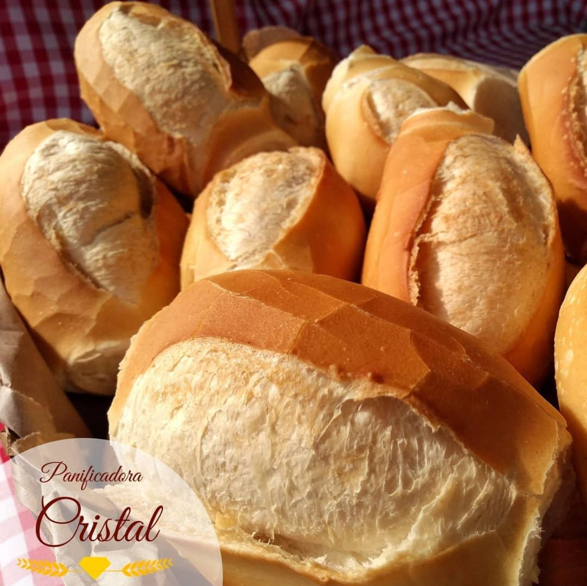
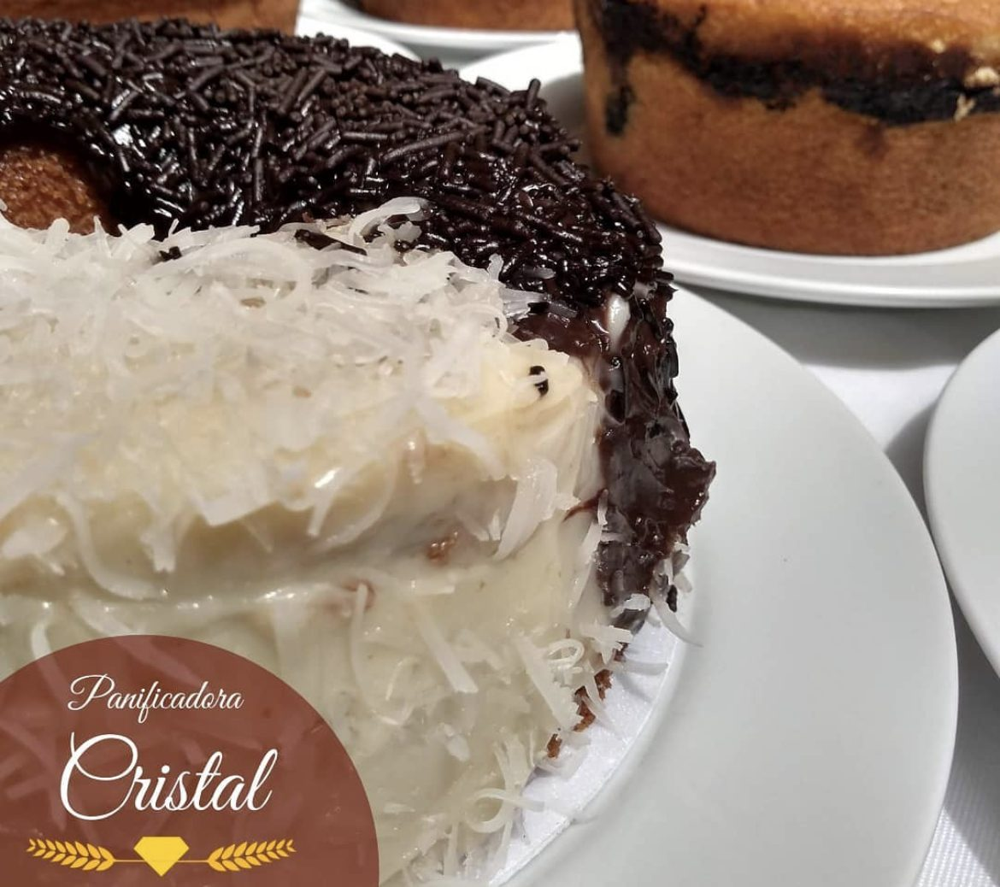

Pão francês
Crocante por fora, macio por dentro. Várias fornadas ao longo do dia.
Preço por unidade ou kgPadaria & restaurante · Alecrim, Natal/RN
Tá quentinho, bem gostosinho. Pães, bolos, salgados e almoço feitos com tradição e qualidade na Rua Dr. Manoel Miranda.

Cardápio
Escolha uma categoria. Preços e disponibilidade do dia no balcão ou pelo telefone.
Crocante por fora, macio por dentro. Várias fornadas ao longo do dia.
Preço por unidade ou kgMassa fofinha e levemente adocicada, ideal para o café da manhã.
Consulte no balcãoCom grãos, para um lanche mais leve.
Consulte no balcãoQuentinho, saído do forno.
Consulte no balcãoMetade chocolate com granulado, metade coco. “Para agradar a todos de casa.”
Inteiro ou em fatiaMassas simples para o café da tarde, em forma redonda.
Consulte no balcãoSob encomenda, com recheio e cobertura à sua escolha.
Sob encomendaDoces da vitrine para depois do almoço. Veja o destaque “Sobremesas” no Instagram.
Consulte no balcãoDocinhos em cento para aniversários e eventos.
Sob encomendaPara o lanche da tarde ou para levar.
Consulte no balcãoEm cento, para eventos e reuniões.
Sob encomendaSanduíches no pão da casa, feitos na hora.
Consulte no balcãoFilé empanado, maionese de legumes e salada crua. Sugestão de almoço leve.
Consulte o prato do diaVárias opções de salada todos os dias.
Consulte no balcãoCoado ou com leite, para acompanhar o pão.
Consulte no balcãoPara o almoço e o lanche.
Consulte no balcão◆Itens com o cristal aparecem nas publicações da Cristal no Instagram. Os demais são a estrutura sugerida e serão ajustados ao cardápio real antes da publicação.

Almoço na Cristal
“Sugestão de almoço leve, com várias opções de salada que você encontra aqui na Cristal.”
— Panificadora Cristal, no Instagram
Encomendas
Conte o que você precisa. Montamos a mensagem do pedido para você enviar direto para a Cristal.

Sobre nós
Um conceito em sabor, feito com amor.
A Panificadora Cristal é padaria e restaurante no coração do Alecrim, em Natal. Tradição e qualidade no pão de todo dia, nos bolos de fim de semana e no almoço de quem trabalha no bairro.
Acompanhe a Cristal no Instagram: sobremesas, horários, datas especiais, dicas e o carinho dos clientes.
Quem prova, comenta
858 avaliações no Google.
“Crocante e macio.”
“Um prato colorido e cheio de saúde.”
Galeria
Contato
Rua Dr. Manoel Miranda, 719
Alecrim, Natal/RN — CEP 59037-250
Confira o horário atualizado no destaque “Horário” do Instagram.